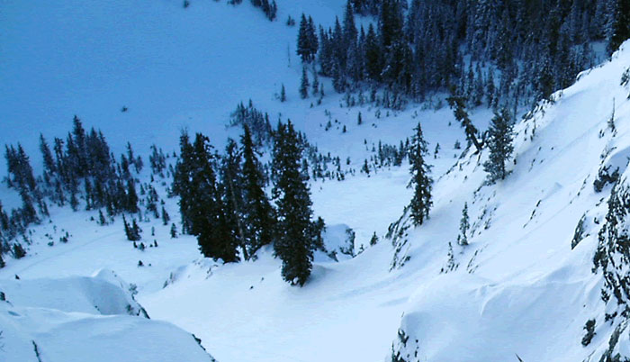
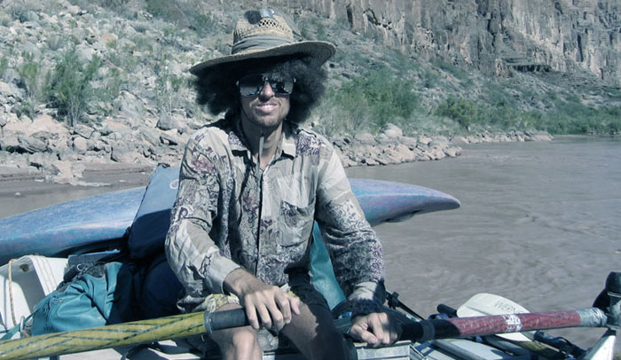
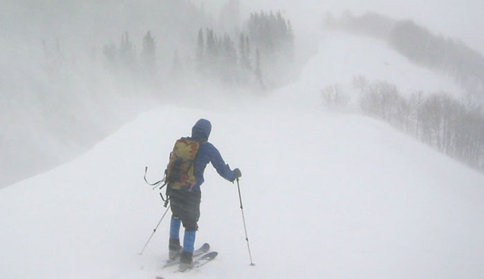

Home Page Photo Archive
 Looking down the fang of Days Fork. (January 2004 to October 2004)
 Da Freek rows the Grand Canyon. (October 2004 to December 2004)
 OnTheRoadAgain out for a ridge walk in 70+ mph winds. (January 2005 to March 2005)